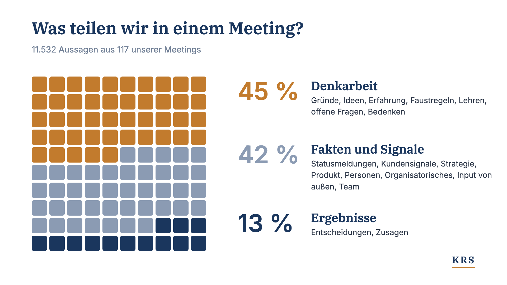
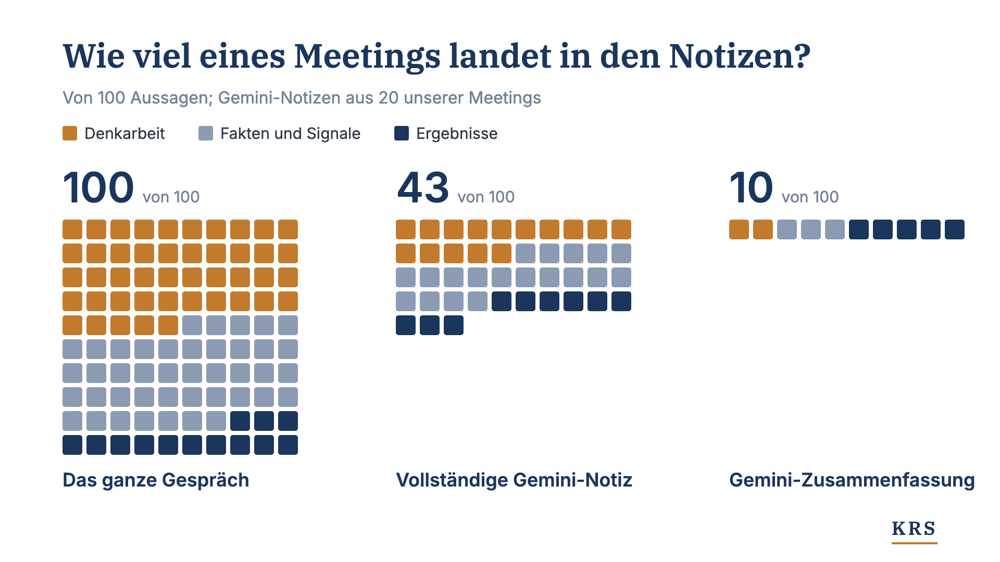
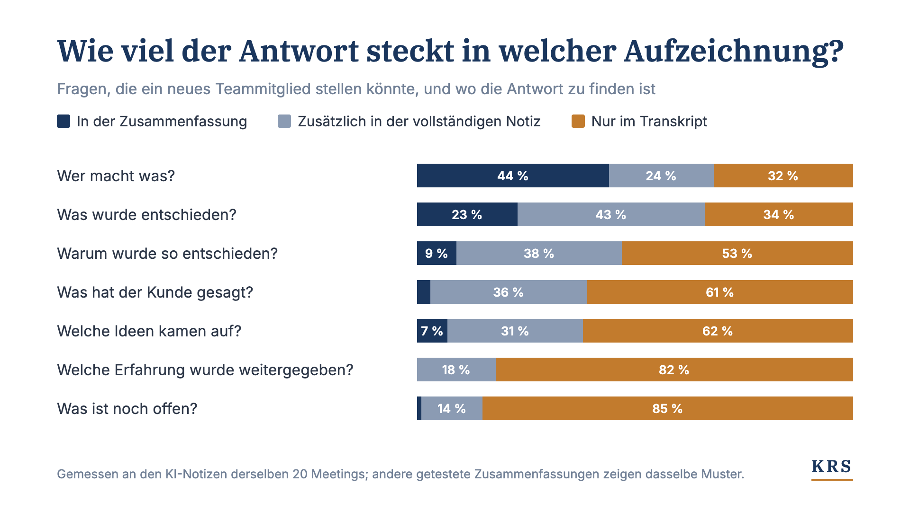

Warum wir jedes Meeting-Transkript behalten
In 117 unserer Meetings war fast die Hälfte des Gesagten Denkarbeit: Gründe, Ideen, Erfahrung. KI-Zusammenfassungen behielten davon fast nichts.

Zuerst erschienen auf LinkedIn (Englisch). Für die Website übersetzt.

Wenn ein erfahrener Kollege das Unternehmen verlässt, steht das, was mit ihm geht, selten in einem Dokument. Dasselbe passiert, wenn ein Projekt endet: Der Abschlussbericht bleibt, die Erkenntnisse auf dem Weg meist nicht. Oder wenn ein Vertriebler beim Kunden etwas Neues erfährt: Eine Zeile landet im CRM, der Rest wird einmal im wöchentlichen Teammeeting erwähnt. In jedem dieser Fälle bleibt das Ergebnis erhalten, und das Denken dahinter geht verloren: wie die Beteiligten die Lage eingeschätzt haben, was sie aus früherer Erfahrung mitgebracht haben, welche Ideen sie erwogen und verworfen haben. Dieses implizite Wissen steckt in den Köpfen. Wenn es überhaupt herauskommt, dann in Gesprächen und Meetings.
Ich bin überzeugt, dass Meetings die letzte große Datenquelle sind, die noch weitgehend ungenutzt ist. Richtig erfasst, sind Meeting-Transkripte der Schlüssel zu dem Problem der Wissenssicherung, vor dem viele Unternehmen heute stehen.
117 Meetings, 88 Stunden Audio
Wir haben seit der Gründung fast jedes interne Meeting bei KRS aufgezeichnet. Von Anfang an wollten wir Prozesse, die auf KI ausgelegt sind, und wir wussten, dass Daten und Kontext genau das möglich machen. Wir zeichnen auf, um unser CRM und unsere Aufgabenverwaltung zu füttern, um Ausgangsmaterial für Dokumente zu haben und um die Transkriptverarbeitung für unsere Kundeninterviews zu verbessern. Angefangen haben wir mit Google Meet und Microsoft Teams. Dann kamen ein Plaud-Rekorder für Meetings im Raum und Ansteckmikrofone für Meetings beim Spazierengehen dazu (sehr zu empfehlen).
Bisher sind das 117 Meetings und 88 Stunden Audio: 615.000 Wörter oder rund 900 A4-Seiten in 10-Punkt-Schrift. Mit diesen Daten können wir genau hinschauen, worüber wir eigentlich sprechen, wenn wir über unser Geschäft reden. Wir haben jedes Meeting mit KI in einzelne Aussagen zerlegt, insgesamt etwa 11.500, und jede nach ihrer Art eingeordnet: eine Entscheidung, eine Idee, ein Kundensignal und so weiter. Diese Arten haben wir zu drei Kategorien zusammengefasst: Denkarbeit, Fakten und Signale sowie Ergebnisse (Abbildung 1).

Denkarbeit macht fast die Hälfte unserer Gespräche aus: Dinge durchdenken, Ideen austauschen, frühere Erfahrungen und Bedenken teilen. Genau hier zeigt sich vieles von dem, was man Erfahrung nennt, und genau diese Art von Wissen wird normalerweise nicht aufgeschrieben. Nur 13 % des Gesagten betrifft Ergebnisse.
Was in Notizen und Zusammenfassungen übrig bleibt
Für die 20 Meetings, die wir über Google Meet geführt haben, habe ich jedes Transkript mit der vollständigen Meeting-Notiz von Gemini und mit der Zusammenfassung verglichen, die Gemini per E-Mail verschickt. Dabei habe ich geprüft, wie viel jeder Kategorie dort erhalten bleibt (Abbildung 2). Die vollständige Notiz behält 43 von 100 Aussagen. Die Zusammenfassung behält 10, und die Hälfte davon sind Entscheidungen und Zusagen. Von Microsoft Teams, Zoom oder anderen KI-Zusammenfassungen in Videokonferenz-Tools erwarte ich sehr ähnliche Ergebnisse.
Man sieht, dass die Denkarbeit überproportional wegfällt, wenn ein Meeting verdichtet wird. Das gilt für KI-Notizen, und ich glaube, es galt schon immer auch für Notizen und Zusammenfassungen von Menschen. Wir behalten meist die Entscheidungen, die Zusagen, die Statusmeldungen und die wichtigen Signale von außen. Die Begründung fällt als Erstes weg.

Ein Beispiel aus einem unserer Dailys: Marco bereitete eine Runde von Gesprächen mit potenziellen Kunden vor, und ich erinnerte mich an ein Führungsseminar, das ich einmal besucht hatte:
„Ich habe nur einen Satz daraus mitgenommen: Wer fragt, führt. Je länger ich darüber nachdenke, und das ist schon ein paar Jahre her, desto wahrer ist das. Mit der richtigen Frage bringst du die Leute selbst dorthin, es zu ihrem eigenen Gedanken zu machen. Das ist auf jeden Fall der beste Weg.“
Die Zusammenfassung von Gemini behielt die Aufgabe: „Vorbereitung von Gesprächsleitfäden und Fragestilen für die kommenden Termine“. Verloren ging der Rat, wie man diese Gespräche führt, und dass er aus einem ganz anderen Zusammenhang stammte. (Das gesprochene Zitat ist leicht geglättet.)
Für wen der Text gedacht ist
Dieser Verlust ist nicht immer ein Problem. Es kommt darauf an, für wen der Text gedacht ist. Wer im Meeting war oder die Arbeit eng verfolgt, braucht wahrscheinlich nur die wichtigsten Entscheidungen und Aufgaben. Wer aber neu im Team oder neu in der Rolle ist, will wissen, warum so entschieden wurde und ob es Alternativen gab. Dasselbe gilt, wenn ein neues Projekt beginnt und Erkenntnisse aus früheren Projekten wichtig sein könnten. Abbildung 3 zeigt, wie gut Zusammenfassung, vollständige Notiz und Transkript einige dieser Fragen beantworten.

Zusammenfassungen und Notizen haben ihren Platz, gerade im Tagesgeschäft, und es gibt Wege, mehr von der Denkarbeit darin zu behalten, etwa mit Methoden zur Erfassung von Begründungen. Entscheidend ist: Die meisten Unternehmen sammeln heute weder Transkripte noch Zusammenfassungen systematisch oder so, dass sie später nutzbar sind. Das ist schade, denn in diesen Daten steckt viel Potenzial: bessere Einarbeitung neuer Teammitglieder, besserer Wissenstransfer ins nächste Projekt und schnellere, gründlichere Vorbereitung von Dokumenten.
Einwilligung, Datenschutz und Fehler
An dieser Stelle haben Sie wahrscheinlich Fragen zu Einwilligung und Datenschutz. Alle müssen wissen, dass aufgezeichnet wird, und die Aufzeichnung muss vorab vereinbart sein. In Deutschland gehört dazu der Betriebsrat. Wer weiß, dass aufgezeichnet wird, spricht anfangs anders. Nach unserer Erfahrung legt sich das nach ein paar Meetings. Wir entfernen aus unseren Transkripten alles, was nichts mit der Arbeit zu tun hat. Es gibt außerdem gute technische Wege, die Denkarbeit zu behalten und dabei zu entfernen, wer was gesagt hat. Wie weit man geht, hängt von der Rechtslage, den Anforderungen des Unternehmens und den Wünschen des Teams ab.
Das Potenzial von Transkripten ist groß. Es reicht aber nicht, alle Rohtranskripte in einen SharePoint-Ordner zu legen und Copilot darin suchen zu lassen. Rohtranskripte enthalten viele Fehler. In den 88 Stunden Audio, die wir bisher verarbeitet haben, fanden wir etwa 3.600 Fehler, ungefähr einen alle 90 Sekunden. Die tatsächliche Zahl ist höher, denn wir können nur die Fehler zählen, die wir finden. Die meisten betreffen Namen und Fachbegriffe, und genau danach sucht man meistens. Zum Glück lassen sich die meisten dieser Fehler beheben. Darum geht es in meinem nächsten Artikel.
Bis dahin ein Rat: Fangen Sie an, Ihre Meeting-Aufzeichnungen systematisch abzulegen. Behalten Sie mindestens die Notizen und idealerweise die Transkripte. Ein Transkript lässt sich später bereinigen. Was eine Zusammenfassung weglässt, ist für immer verloren.